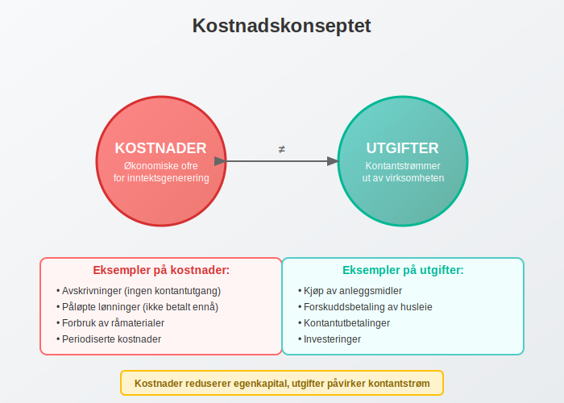
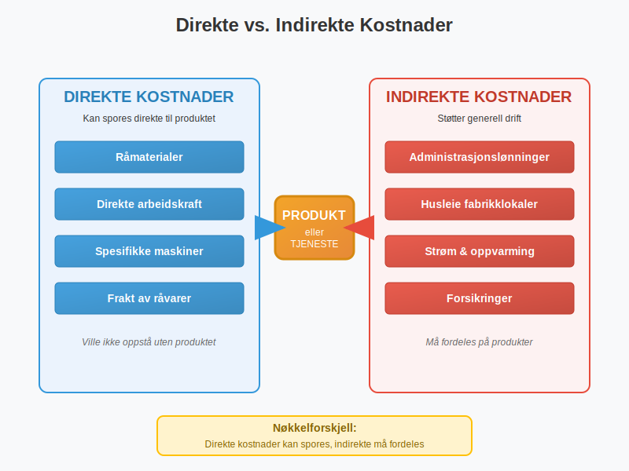
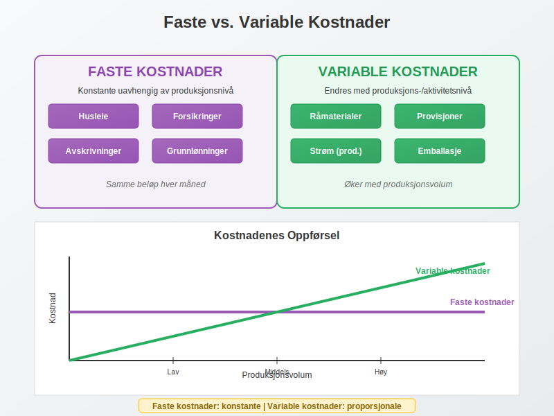
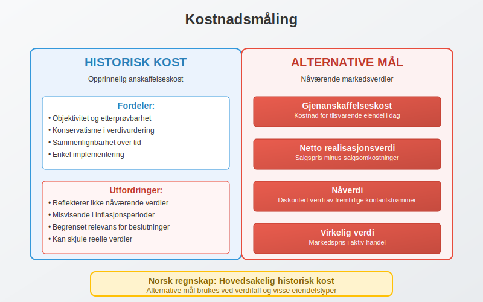
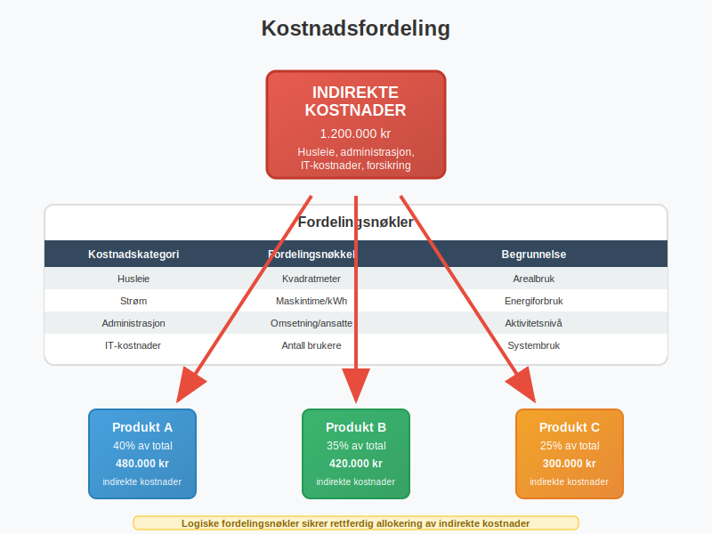
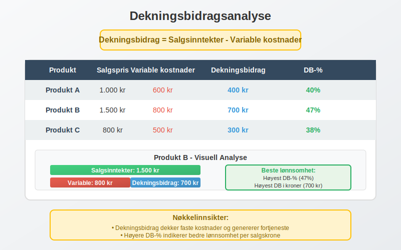
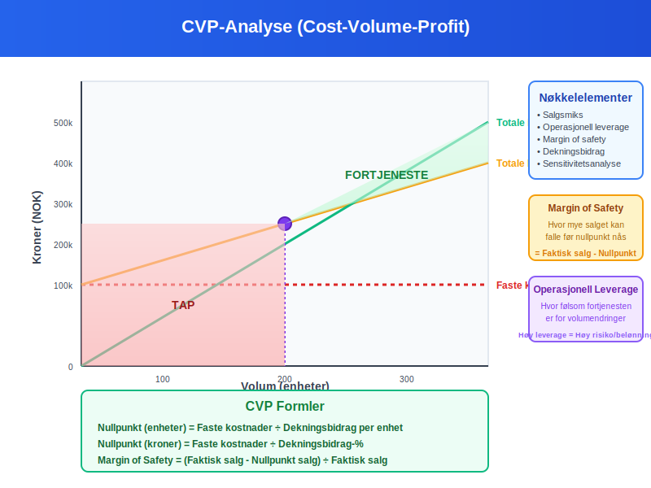
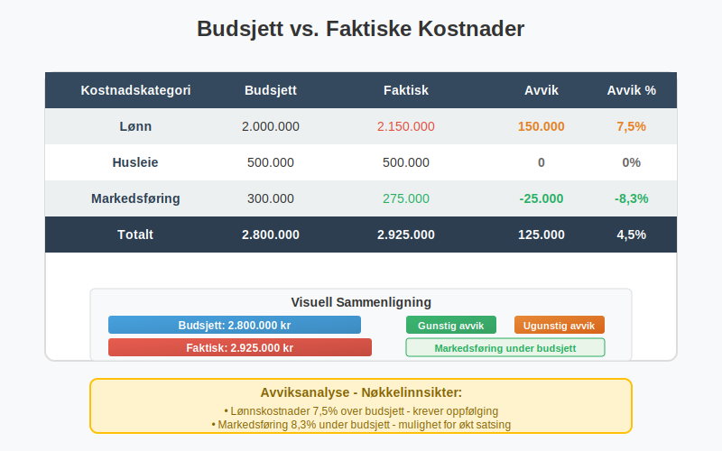

Kostnader er en av de mest fundamentale begrepene i regnskap og representerer de økonomiske ofrene en virksomhet gjør for å generere inntekter og opprettholde driften. Forståelse av kostnader er avgjørende for effektiv bokføring, lønnsomhetsanalyse og strategisk beslutningstagning.
Kostnader påvirker direkte virksomhetens driftsresultat og er en kritisk komponent i driftsregnskapet. Korrekt klassifisering og regnskapsføring av kostnader er essensielt for å følge god regnskapsskikk.
Det er også viktig å skille mellom kostnader og utgifter, som representerer tidspunktet for betaling. Les mer i vår artikkel om utgift.
Seksjon 1: Grunnleggende Kostnadskonsepter
1.1 Definisjon av Kostnader
I regnskapssammenheng defineres kostnader som økonomiske ressurser som forbrukes eller ofres for å oppnå et bestemt mål. Kostnader representerer reduksjonen i egenkapital som ikke skyldes utdelinger til eiere.

Kostnader skiller seg fra utgifter ved at:
- Kostnader er økonomiske ofre knyttet til inntektsgenerering
- Utgifter er kontantstrømmer ut av virksomheten
- En kostnad kan oppstå uten tilhørende utgift (f.eks. avskrivning)
- En utgift kan oppstå uten tilhørende kostnad (f.eks. kjøp av anleggsmidler)
1.2 Kostnadenes Rolle i Regnskapsligningen
Kostnader påvirker den grunnleggende regnskapsligningen ved å redusere egenkapitalen:
Eiendeler = Gjeld + Egenkapital
Når kostnader påløper, reduseres egenkapitalen, og dette balanseres enten ved:
- Reduksjon i eiendeler (f.eks. kontanter brukt til lønn)
- Økning i gjeld (f.eks. påløpte, men ikke betalte kostnader)
Seksjon 2: Hovedkategorier av Kostnader
2.1 Direkte vs. Indirekte Kostnader

Direkte kostnader
Direkte kostnader kan spores direkte til et spesifikt produkt, tjeneste eller kostnadssted. Disse kostnadene ville ikke oppstå hvis produktet eller tjenesten ikke ble produsert.
Eksempler på direkte kostnader:
- Råmaterialer brukt i produksjon
- Direkte arbeidskraft (lønn til produksjonsarbeidere)
- Spesifikke maskiner leid for et prosjekt
- Frakt av råvarer til produksjon
Indirekte kostnader
Indirekte kostnader (også kalt overhead eller felleskostnader) kan ikke enkelt spores til et spesifikt produkt eller tjeneste. Disse kostnadene støtter den generelle driften.
Eksempler på indirekte kostnader:
- Administrasjonslønninger
- Husleie for fabrikklokaler
- Strøm og oppvarming
- Forsikringer
- Vedlikehold av fellesutstyr
2.2 Faste vs. Variable Kostnader

Faste Kostnader
Faste kostnader forblir konstante uavhengig av produksjons- eller aktivitetsnivået innenfor et relevant område.
| Kostnadskategori | Eksempler | Karakteristikk |
|---|---|---|
| Husleie | Kontorleie, fabrikkhaller | Uendret månedlig beløp |
| Forsikringer | Bygningsforsikring, ansvarsforsikring | Årlige premier |
| Avskrivninger | Maskiner, bygninger | Systematisk fordeling over tid |
| Grunnlønninger | Faste månedslønninger | Uavhengig av produksjon |
Variable Kostnader
Les mer om Variable kostnader for en detaljert guide.
Variable kostnader endres proporsjonalt med aktivitets- eller produksjonsnivået.
| Kostnadskategori | Eksempler | Variasjonsmønster |
|---|---|---|
| Råmaterialer | Stål, tre, tekstiler | Direkte proporsjonal |
| Provisjoner | Salgsprovisjoner | Basert på salgsvolum |
| Strøm (produksjon) | Maskindrift | Øker med produksjon |
| Emballasje | Bokser, etiketter | Per produsert enhet |
Semi-variable Kostnader
Noen kostnader har både faste og variable komponenter:
- Telefon: Fast månedlig abonnement + variable samtalegebyrer
- Strøm: Fast tilknytningsavgift + variabel forbruksavgift
- Lønn: Fast grunnlønn + variable overtidstillegg
2.3 Driftskostnader vs. Finanskostnader
Driftskostnader
Driftskostnader er kostnader direkte knyttet til virksomhetens kjerneaktiviteter og inntektsgenerering.
Hovedkategorier av driftskostnader:
- Varekostnader: Innkjøp av varer for videresalg
- Lønnskostnader: Lønn, feriepenger, arbeidsgiveravgift
- Sosiale kostnader: Se Sosiale kostnader.
- Avskrivninger: Systematisk fordeling av anleggsmidlers kostnad
- Leiekostnader: Husleie, maskinleie
- Markedsføringskostnader: Annonsering, messer, PR
- Administrasjonskostnader: Kontorrekvisita, telefon, forsikring
Finanskostnader
Finanskostnader er kostnader knyttet til virksomhetens finansieringsaktiviteter:
- Rentekostnader: Renter på lån og kreditter
- Bankgebyrer: Kontoføring, transaksjonsgebyrer
- Valutakurstap: Tap ved valutaomregning
- Garantiprovisjon: Kostnader for lånegarantier
Seksjon 3: Kostnadsmåling og Verdivurdering
3.1 Historisk Kost vs. Nåverdi

Historisk Kostprinsipp
Det historiske kostprinsippet er grunnleggende i norsk regnskap og innebærer at eiendeler og kostnader måles til opprinnelig anskaffelseskost.
Fordeler med historisk kost:
- Objektivitet og etterprøvbarhet
- Konservatisme i verdivurdering
- Sammenlignbarhet over tid
- Enkel implementering
Utfordringer med historisk kost:
- Reflekterer ikke nåværende markedsverdier
- Kan gi misvisende lønnsomhetsmål i inflasjonsperioder
- Begrenset relevans for beslutningstagning
Alternative Kostnadsmål
- Gjenanskaffelseskost: Kostnad for å anskaffe tilsvarende eiendel i dag
- Netto realisasjonsverdi: Forventet salgspris minus salgsomkostninger
- Nåverdi: Diskontert verdi av fremtidige kontantstrømmer
- Alternativkostnad: Tapet av beste alternative bruk av ressurser. Les mer i Hva er Alternativkostnad?.
3.2 Anskaffelseskost
Anskaffelseskost omfatter alle kostnader som er nødvendige for å bringe eiendelen til tiltenkt bruk:
Komponenter i anskaffelseskost:
- Kjøpspris (fratrukket rabatter og bonuser)
- Importavgifter og ikke-refunderbare skatter
- Transportkostnader
- Installasjonskostnader
- Profesjonelle honorarer (advokat, revisor)
- Testkostnader
Seksjon 4: Kostnadsfordeling og Allokering
4.1 Kostnadsfordelingsprinsipper

Kostnadsfordeling er prosessen med å tildele indirekte kostnader til produkter, tjenester eller avdelinger basert på logiske fordelingsnøkler.
Vanlige Fordelingsnøkler
| Kostnadskategori | Fordelingsnøkkel | Begrunnelse |
|---|---|---|
| Husleie | Kvadratmeter | Arealbruk |
| Strøm | Maskintime/kWh | Energiforbruk |
| Administrasjon | Omsetning/ansatte | Aktivitetsnivå |
| IT-kostnader | Antall brukere | Systembruk |
| HR-kostnader | Antall ansatte | Personalstøtte |
4.2 Aktivitetsbasert Kostnadsberegning (ABC)
Activity-Based Costing (ABC) er en mer sofistikert metode for kostnadsfordeling som fokuserer på aktiviteter som driver kostnader.
ABC-prosessen:
- Identifiser aktiviteter: Kartlegg alle aktiviteter i organisasjonen
- Bestem kostnadsdrivere: Identifiser hva som forårsaker kostnadene
- Beregn aktivitetskostnader: Samle kostnader per aktivitet
- Alloker til produkter: Fordel basert på produktenes bruk av aktiviteter
Seksjon 5: Kostnadsanalyse og Lønnsomhet
5.1 Dekningsbidragsanalyse
Dekningsbidrag er et sentralt konsept for lønnsomhetsanalyse:
Dekningsbidrag = Salgsinntekter - Variable kostnader

Dekningsbidrag per Enhet
| Produkt | Salgspris | Variable kostnader | Dekningsbidrag | DB-% |
|---|---|---|---|---|
| Produkt A | 1.000 kr | 600 kr | 400 kr | 40% |
| Produkt B | 1.500 kr | 800 kr | 700 kr | 47% |
| Produkt C | 800 kr | 500 kr | 300 kr | 38% |
5.2 Nullpunktsanalyse
Nullpunkt (break-even) er det punktet hvor totale inntekter er lik totale kostnader.
Nullpunkt i enheter = Faste kostnader ÷ Dekningsbidrag per enhet
Nullpunkt i kroner = Faste kostnader ÷ Dekningsbidrag-%
5.3 Kostnads-Volum-Fortjeneste Analyse (CVP)
CVP-analyse undersøker sammenhengen mellom kostnader, volum og fortjeneste:

Nøkkelelementer i CVP-analyse:
- Salgsmiks: Forholdet mellom ulike produkters salg
- Operasjonell leverage: Hvor følsom fortjenesten er for volumendringer
- Margin of safety: Hvor mye salget kan falle før nullpunkt nås
Seksjon 6: Spesielle Kostnadskategorier
6.1 Periodiseringskostnader
Periodiseringsprinsippet krever at kostnader matches mot tilhørende inntekter i samme periode.
Påløpte Kostnader
Påløpte kostnader er kostnader som er opptjent, men ikke betalt:
- Påløpte lønninger ved periodeslutt
- Påløpte renter på lån
- Påløpte, men ikke fakturerte tjenester
Forskuddsbetalte Kostnader
Forskuddsbetalte kostnader er betalinger for fremtidige tjenester:
- Forskuddsbetalt forsikring
- Forskuddsbetalt husleie
- Forskuddsbetalte lisenser
6.2 Avskrivninger som Kostnad
Avskrivning representerer den systematiske fordelingen av et anleggsmiddels kostnad over dets brukstid.
Avskrivningsmetoder:
- Lineær avskrivning: Lik kostnad hvert år
- Saldoavskrivning: Prosentvis av gjenstående verdi
- Produksjonsbasert: Basert på faktisk bruk
6.3 Amortisering av Immaterielle Eiendeler
Amortisering er avskrivning av immaterielle eiendeler:
- Goodwill: Nedskrivningstesting årlig
- Patenter: Amortiseres over juridisk eller økonomisk levetid
- Programvare: Amortiseres over forventet brukstid
- Kundeforhold: Amortiseres over forventet varighet
Seksjon 7: Kostnadsregnskapsføring
7.1 Journalføring av Kostnader
Kostnader journalføres ved dobbel bokføring hvor kostnadskontoen debiteres:
Eksempel - Lønnskostnad:
Debet: Lønnskostnad 100.000 kr
Kredit: Kontanter 80.000 kr
Kredit: Skyldig lønn 20.000 kr
7.2 Kostnadskontoer i Kontoplanen
Kostnader klassifiseres i kontoklasser 4-8 i norsk standard kontoplan:
| Kontoklasse | Kostnadskategori | Eksempler |
|---|---|---|
| 4 | Driftskostnader | Varekjøp, lønn, husleie |
| 5 | Lønnskostnader | Lønn, feriepenger, pensjon |
| 6 | Avskrivninger | Maskiner, bygninger |
| 7 | Finanskostnader | Renter, bankgebyrer |
| 8 | Ekstraordinære | Engangskostnader |
7.3 Bilagsbehandling for Kostnader
Korrekt bilagsbehandling er kritisk for kostnadskontroll:
Dokumentasjonskrav:
- Innkjøpsfakturaer: Alle varekjøp og tjenester
- Lønnslipper: Dokumentasjon av lønnskostnader
- Kvitteringer: Mindre kontantutlegg
- Kontrakter: Langsiktige forpliktelser
- Bankkontoutskrifter: Betalingsbekreftelser
Seksjon 8: Kostnadskontroll og Budsjettering
8.1 Budsjetterte vs. Faktiske Kostnader

Avviksanalyse sammenligner budsjetterte og faktiske kostnader:
| Kostnadskategori | Budsjett | Faktisk | Avvik | Avvik % |
|---|---|---|---|---|
| Lønn | 2.000.000 | 2.150.000 | 150.000 | 7,5% |
| Husleie | 500.000 | 500.000 | 0 | 0% |
| Markedsføring | 300.000 | 275.000 | -25.000 | -8,3% |
| Totalt | 2.800.000 | 2.925.000 | 125.000 | 4,5% |
8.2 Standardkostnader
Standardkostnader er forhåndsbestemte kostnader basert på effektiv drift under normale forhold.
Typer standardkostnader:
- Ideelle standarder: Perfekte forhold, ingen ineffektivitet
- Oppnåelige standarder: Realistiske, men utfordrende mål
- Normale standarder: Basert på historisk gjennomsnitt
8.3 Kostnadskontrollsystemer
Effektiv kostnadskontroll krever systematiske prosesser:
Nøkkelelementer:
- Kostnadssentre: Organisatoriske enheter med kostnadsansvar
- Rapporteringsrutiner: Regelmessig kostnadsoversikt
- Godkjennelsesprosedyrer: Kontroll av utgifter
- Benchmarking: Sammenligning med bransjestandard
Seksjon 9: Kostnader i Ulike Bransjer
9.1 Produksjonsbedrifter
I produksjonsbedrifter skilles mellom:
Produktkostnader:
- Direkte materialer
- Direkte arbeidskraft
- Produksjonsoverhead
Periodekostnader:
- Salgs- og markedsføringskostnader
- Administrasjonskostnader
9.2 Tjenestebedrifter
Tjenestebedrifter har typisk:
- Høy andel lønnskostnader (ofte 60-80% av totale kostnader)
- Lave materialekostnader
- Betydelige indirekte kostnader (IT, lokaler, utstyr)
9.3 Handelsbedrifter
For detaljhandel og engroshandel:
- Varekostnader dominerer (typisk 60-80% av omsetning)
- Lagerkostnader (lagring, forsikring, svinn)
- Logistikkostnader (transport, håndtering)
Seksjon 10: Skattemessige Aspekter av Kostnader
10.1 Fradragsberettigede Kostnader
For å være fradragsberettiget må kostnader oppfylle visse kriterier:
Hovedregel: Kostnader som er pådratt for å erverve, sikre eller vedlikeholde skattepliktig inntekt.
Vanlige fradragsberettigede kostnader:
- Driftskostnader i næringsvirksomhet
- Lønnskostnader inkludert arbeidsgiveravgift
- Avskrivninger på driftsmidler
- Rentekostnader på næringslån
- Forsikringspremier for næringsvirksomhet
10.2 Ikke-fradragsberettigede Kostnader
Eksempler på ikke-fradragsberettigede kostnader:
- Private kostnader
- Bøter og straffer
- Gaver over visse beløpsgrenser
- Visse representasjonskostnader
- Kostnader ved erverv av aksjer
10.3 Periodisering for Skatteformål
Skattemessig periodisering kan avvike fra regnskapsmessig:
- Kontantprinsippet: For mindre virksomheter
- Regnskapsprinsippet: For større virksomheter
- Særregler: For visse kostnadskategorier
Seksjon 11: Internasjonale Perspektiver
11.1 IFRS og Kostnadsmåling
International Financial Reporting Standards (IFRS) påvirker kostnadsmåling:
Nøkkelstandarder:
- IAS 2: Varelager - kostnadsmåling og verdivurdering
- IAS 16: Eiendom, anlegg og utstyr - avskrivninger
- IAS 38: Immaterielle eiendeler - amortisering
- IAS 36: Verdifall på eiendeler - nedskrivninger
11.2 Transfer Pricing
For konserner med internasjonale transaksjoner er transfer pricing kritisk:
- Prising av interne transaksjoner
- Dokumentasjonskrav
- Armlengdeprinsippet
- Skattemessige konsekvenser
Seksjon 12: Digitalisering og Kostnadshåndtering
12.1 Automatisering av Kostnadsregistrering
Moderne teknologi transformerer kostnadshåndtering:
Digitale løsninger:
- OCR-teknologi: Automatisk lesing av fakturaer
- ERP-systemer: Integrert kostnadshåndtering
- AI og maskinlæring: Kostnadsprediksjon og -analyse
- Mobil-apper: Reiseregninger og utlegg
12.2 Sanntids Kostnadsrapportering
Fordeler med sanntids kostnadsdata:
- Raskere beslutningstagning
- Proaktiv kostnadskontroll
- Forbedret budsjettoppfølging
- Redusert administrativt arbeid
Konklusjon
Kostnader er et komplekst og mangefasettert område innen regnskap som krever grundig forståelse for effektiv virksomhetsstyring. Fra grunnleggende klassifisering til avanserte analyseteknikker, påvirker kostnadshåndtering alle aspekter av en virksomhets økonomiske prestasjon.
Nøkkelpunkter for effektiv kostnadshåndtering:
- Korrekt klassifisering: Skille mellom ulike kostnadstyper
- Systematisk registrering: Følge etablerte regnskapsprinsipper
- Regelmessig analyse: Overvåke kostnadstrender og avvik
- Strategisk fokus: Bruke kostnadsinformasjon til beslutningstagning
- Kontinuerlig forbedring: Optimalisere kostnadsprosesser
Ved å mestre kostnadskonseptene og implementere robuste kostnadssystemer, kan virksomheter oppnå bedre lønnsomhet, mer effektiv ressursbruk og sterkere konkurranseposisjon i markedet.
For dypere innsikt i relaterte emner, utforsk våre artikler om driftskostnader, avskrivninger, og dekningsbidrag for å bygge en komplett forståelse av kostnadshåndtering i moderne regnskap.